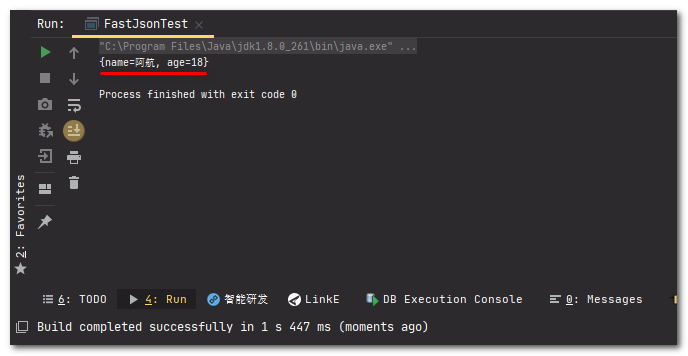
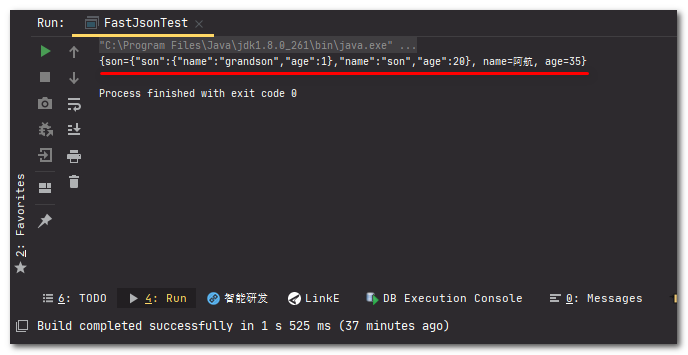

本次开发的任务是比对两个对象的属性, 查看有哪些地方不一致. 为了长期考虑, 决定将它们分别转为Map对象, 再遍历该Map, 分别比较键值对来达到效果. 本篇文章记录下如何通过FastJson将对象Object转为Map.
开始
引入FastJson
将version替换为合适的版本.
`<dependency> <groupId>com.alibaba</groupId> <artifactId>fastjson</artifactId> <version>1.2.69</version> </dependency>`
对象转map函数
`/** * 对象转Map * @param object 要转换的对象 * @return 转换后的Map */ private Map<String, Object> object2Map(Object object) { JSONObject jsonObject = (JSONObject) JSON.toJSON(object); Set<Map.Entry<String, Object>> entrySet = jsonObject.entrySet(); Map<String, Object> map = new HashMap<>(); for (Map.Entry<String, Object> entry : entrySet) { map.put(entry.getKey(), entry.getValue()); } return map; }`
函数 + 运行测试
`import com.alibaba.fastjson.JSON; import com.alibaba.fastjson.JSONObject; import java.util.HashMap; import java.util.Map; import java.util.Set; public class FastJsonTest { public static void main(String[] args) { // 创建对象 Person person = new Person(); person.setName("阿航"); person.setAge(18); // 转换为Map Map<String, Object> map = new FastJsonTest().object2Map(person); // 打印 System.out.println(map.toString()); } private Map<String, Object> object2Map(Object object) { JSONObject jsonObject = (JSONObject) JSON.toJSON(object); Set<Map.Entry<String, Object>> entrySet = jsonObject.entrySet(); Map<String, Object> map = new HashMap<>(); for (Map.Entry<String, Object> entry : entrySet) { map.put(entry.getKey(), entry.getValue()); } return map; } private static class Person { private String name; private Integer age; public String getName() { return name; } public void setName(String name) { this.name = name; } public Integer getAge() { return age; } public void setAge(Integer age) { this.age = age; } } }`
运行后打印到控制台:

复杂对象转换
此函数也可以转换嵌套对象, 比如
Person拥有子对象:
`import com.alibaba.fastjson.JSON; import com.alibaba.fastjson.JSONObject; import java.util.HashMap; import java.util.Map; import java.util.Set; public class FastJsonTest { public static void main(String[] args) { // 创建嵌套对象 Person grandson = new Person(); grandson.setName("grandson"); grandson.setAge(1); Person son = new Person(); son.setName("son"); son.setAge(20); son.setSon(grandson); Person person = new Person(); person.setName("阿航"); person.setAge(35); person.setSon(son); // 对象转换为Map Map<String, Object> map = new FastJsonTest().object2Map(person); System.out.println(map.toString()); } /** * 对象转Map * @param object 要转换的对象 * @return 转换后的Map */ private Map<String, Object> object2Map(Object object) { JSONObject jsonObject = (JSONObject) JSON.toJSON(object); Set<Map.Entry<String, Object>> entrySet = jsonObject.entrySet(); Map<String, Object> map = new HashMap<>(); for (Map.Entry<String, Object> entry : entrySet) { map.put(entry.getKey(), entry.getValue()); } return map; } private static class Person { private String name; private Integer age; private Person son; public String getName() { return name; } public void setName(String name) { this.name = name; } public Integer getAge() { return age; } public void setAge(Integer age) { this.age = age; } public Person getSon() { return son; } public void setSon(Person son) { this.son = son; } } }`
运行后打印到控制台, 可以看到, 这个复杂的嵌套对象也被正常打印:
